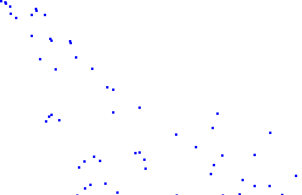

In this part I'll show you how to make a simple particle system from scratch using nothing but OpenFL and the built-in Tilesheet class.
I'll explain how to create and manage simple particles and their properties, such as velocity and acceleration. The example will include a simple collision of the particles with the floor.
Some knowledge about the Tilesheet class is required, so check out my Tilesheet tutorial if you haven't already.
Start by creating an OpenFL project using the default template.
Add a new Particle.hx class:
package ;
import openfl.geom.Point;
class Particle
{
public var x:Float;
public var y:Float;
public var vel_x:Float;
public var vel_y:Float;
public var acc_x:Float;
public var acc_y:Float;
public function new(){}
}As you can see, it is a very simple class that stores the coordinates, velocity and acceleration of a single particle.
Go to the generated Main.hx class and introduce 3 new variables:
var tilesheet:Tilesheet;
var screen:Sprite;
var particles:Array;
You can guess from the names that the first object is a Tilesheet instance, the second is a "canvas" container, and the third is an array of visible particles.
Instantiate all of these variables in the init() function, add a simple graphic for the particle (a 4x4 blue square in my case) and add an ENTER_FRAME event listener.
function init()
{
if (inited) return;
inited = true;
screen = new Sprite();
addChild(screen);
particles = new Array<Particle>();
var particle:BitmapData = new BitmapData(4, 4, false, 0x0000ff);
tilesheet = new Tilesheet(particle);
tilesheet.addTileRect(new Rectangle(0, 0, 4, 4));
this.addEventListener(Event.ENTER_FRAME, update);
}The event handler will do 3 things.
Firstly, it will create a new particle every frame with random values and add it to the array.
Secondly, the particles properties will be updated. This is where we update the coordinates based on the velocity, and the velocity based on the acceleration. This is also where we can add collision with the ground and remove particles that are off screen.
Thirdly, a tileData array will be generated for the visible arrays, which will later be used by our Tilesheet object to render the particles.
The second and third steps can be united in a single for loop.
Here's the full update() code:
public function update(e:Event) {
// add particle
var newParticle:Particle = new Particle();
newParticle.x = 0;
newParticle.y = 0;
newParticle.acc_x = 0;
newParticle.acc_y = 0.5;
newParticle.vel_x = Math.random() * 7 + 3;
newParticle.vel_y = Math.random() * 5;
particles.push(newParticle);
// render
screen.graphics.clear();
var tileData:Array<Float> = new Array<Float>();
var particle:Particle;
for (particle in particles) {
if (particle.x > stage.stageWidth) {
particles.remove(particle);
} else {
tileData = tileData.concat([particle.x, particle.y, 0]);
particle.x += particle.vel_x;
particle.y += particle.vel_y;
particle.vel_x += particle.acc_x;
particle.vel_y += particle.acc_y;
if (particle.y > stage.stageHeight) {
particle.y = stage.stageHeight;
particle.vel_y *= -Math.random()*0.7;
}
}
}
tilesheet.drawTiles(screen.graphics, tileData);
}
Using this snippet, you can add additional rendering properties (such as rotation) using flags. Refer to my Tilesheet tutorial.
The results look like this:
The real application will look way smoother, because of the better framerate.